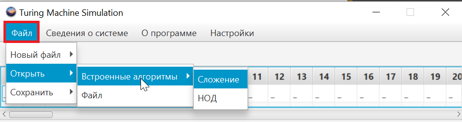
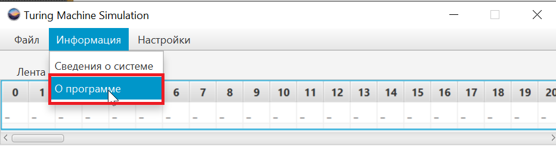
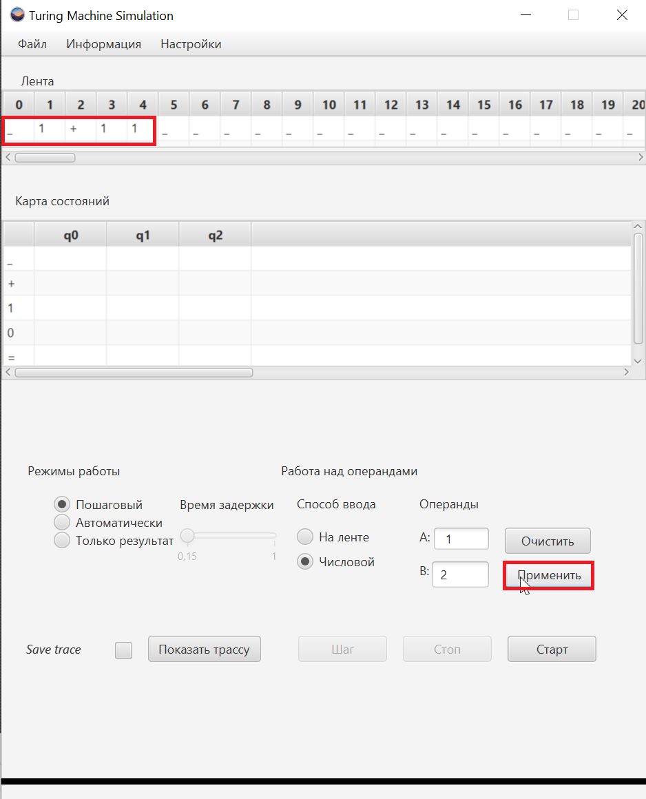
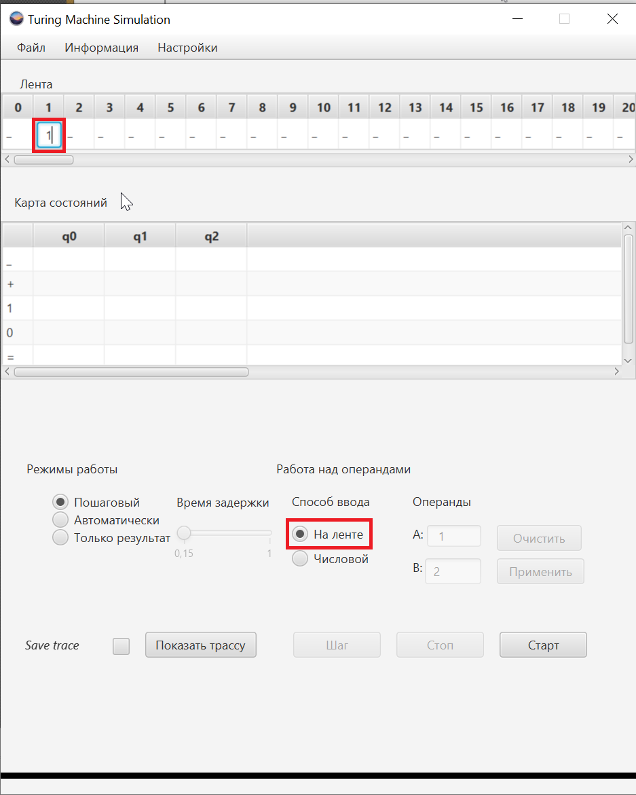
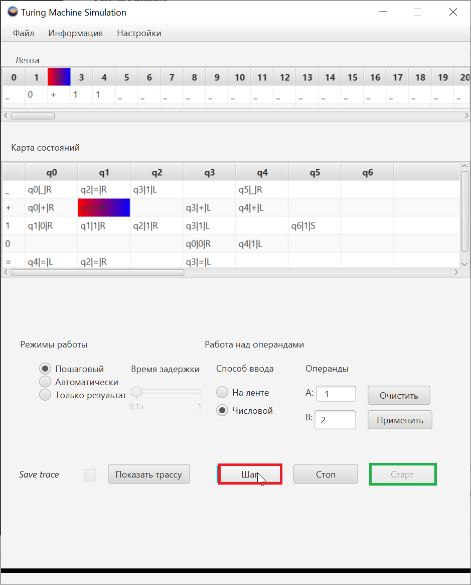
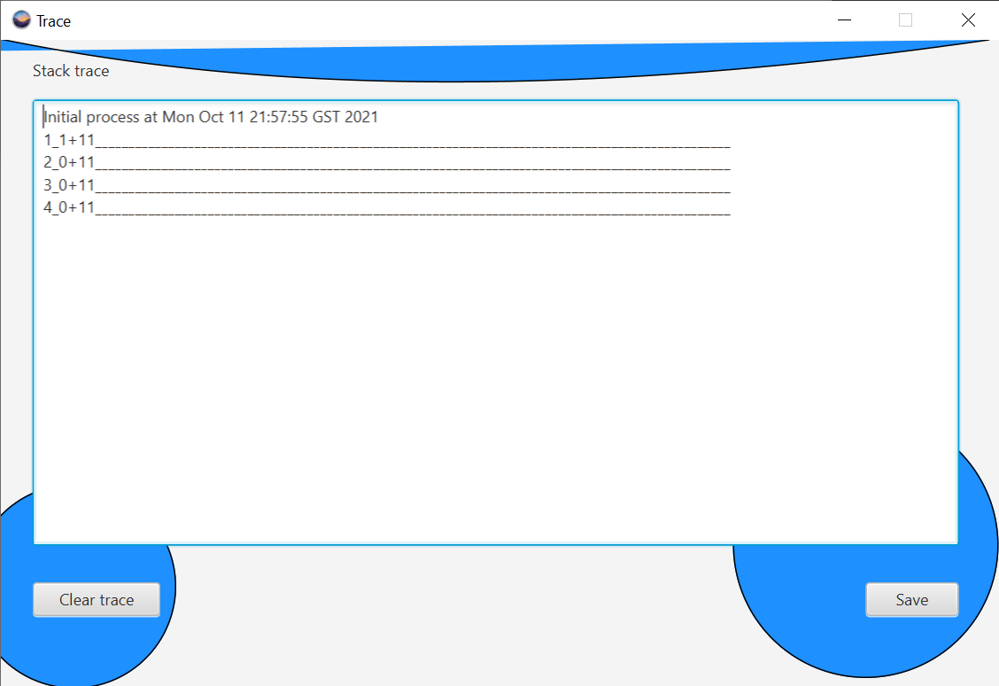
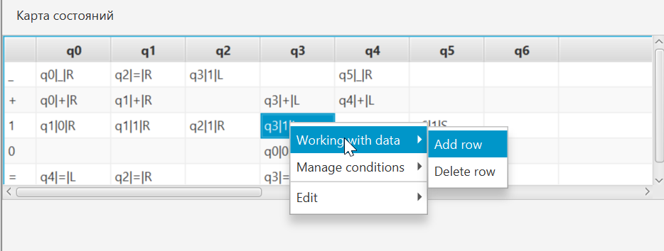

Работа с файлом
Для того чтобы начать работу с файлом необходимо выбрать пункт меню 'Файл'. Для открытия файла необходимо выбрать пункт 'Открыть' и выбрать подпункт 'Файл'. Для открытия встроенных алгоритмов необходимо выбрать пункт 'Встроенные алгоритмы и выбрать' нужный алгоритм. Для сохранения нужно выбрать пункт 'Сохранить' и выбрать либо 'Ленту' или 'Алгоритм'. Лента сохраняется в формате *.lmt, алгоритм *.amt. Для создания нового файла нужно выбрать пункт 'Новый файл', а затем выбрать либо 'Лента' или 'Алгоритм'. "
Рисунок 1 - открытие встроенного алгоритма
Работа с операндами
Для того чтобы узнать информацию о программе нужно перейти в меню 'Информация' и выбрать пунк 'О программе'.
Рисунок 2 - открытие вкладки 'О программе'
Работа с программой
Работа с операндами
Сначала необходимо задать операнды. Для этого нужно выбрать способ задания операндов: 'На ленте' или 'Числовой'. При выборе числового способа нужно задать операнды и нажать клавишу 'Применить'. При нажатии на клавишу 'Очистить' операнды по умолчанию заполняются знаками затирания. При выборе способа задания 'На ленте', нужно сделать левой клавишой мыши двойной щелчок и ввести необходимое значение.
Рисунок 3 - использование автоматического ввода операндов
Рисунок 4 - использование режима ввода операндов на ленте
Режим работы
Перед запуском программы необходимо выбрать один из трех режимов работы 'Пошаговый', 'Автоматический' или 'Только результат'. При выборе автоматического режима нужно указать время задержки программы, при остальных режимах работы эта функция заблокирована.
Запуск программы
Для запуска программы необходимо нажать клавишу 'Старт'. Если установлен пошаговый режим программы, то при помощи клавиши 'Шаг', алгоритм переходит на следующий этап выполнения. Чтобы остановить выполнение программы необходимо нажать клавишу 'Стоп'.
Рисунок 5 - пример использования программы в пошаговом режиме
работа с трассой
Чтобы сохранить трассу в файл нужно установить флажок рядом с надписью 'Сохранять трассу'. При окончании выполния алгоритма или при нажатии на клавишу 'Стоп' появляется диалоговое окно с трасса выполения алгоритма. Для сохранения трассы в текстовый файл нужно нажать на клавишу 'Сохранить ленту в текстовый файл'. Если не установить флажок рядом с надписью 'Сохранять трассу' трасса сохранена не будет!
Рисунок 6 - пример отображения трассы в процессе выполнения алгоритма
Редактирование ячейки алгоритма
Для редактирования ячейки алгоритма необходимо сделать щелчок мышкой на нужную ячейку. В результате появится контекстное меню и нужно в блоке 'По данным' выбрать из предложенного списка символ и состояние в строках 'Символ' и 'Состояние' соответственно. В блоке 'Выполнить вставку' нужно выбрать состояние, символ замены, смещение ленты в строках 'Состояние', 'Символ замены' и 'Смещение ленты' соответственно.
Рисунок 7 - пример использования возможности добавления/удаления строки
Редактирование ячейки ленты
Для редактирования ячейки ленты необходимо сделать щелчок на нужную ячейку. После появиться контекстное меню в котором необходимо выбрать операцию, которую выхотите совершить.
Рисунок 8 - пример использования возможности добавления/удаления ячейки ленты